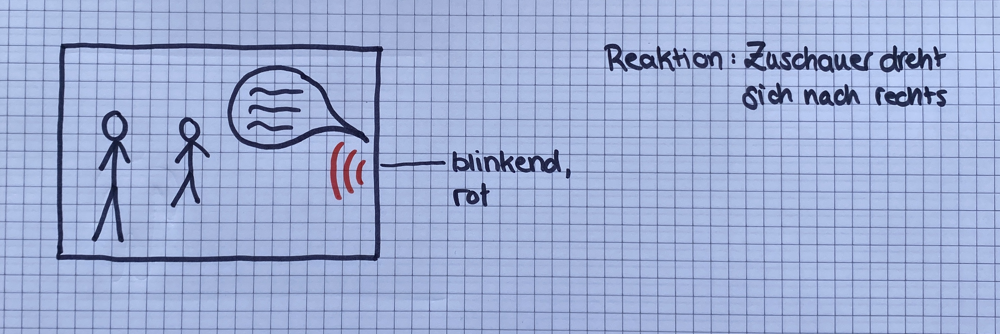

VR Video Prototyp
Idee
Bei einem 360 Grad Video besteht immer die gefahr etwas im Bild zu verpassen, weil man gerade nicht hinsieht. Bei proffessionellen Werbevideos gibt es in der Story meist einen visuellen roten Faden, der den Zuschauer durch das Video führt.
In dem Fall einer Gesprächsrunde, ist dies alerdings nicht der Fall und der Zuschauer ist oft etwas orientierungslos. Deshalb habe ich mir überlegt, wie man den Zuschauer auch hier an der Hand nehmen kann.
Storyboard
